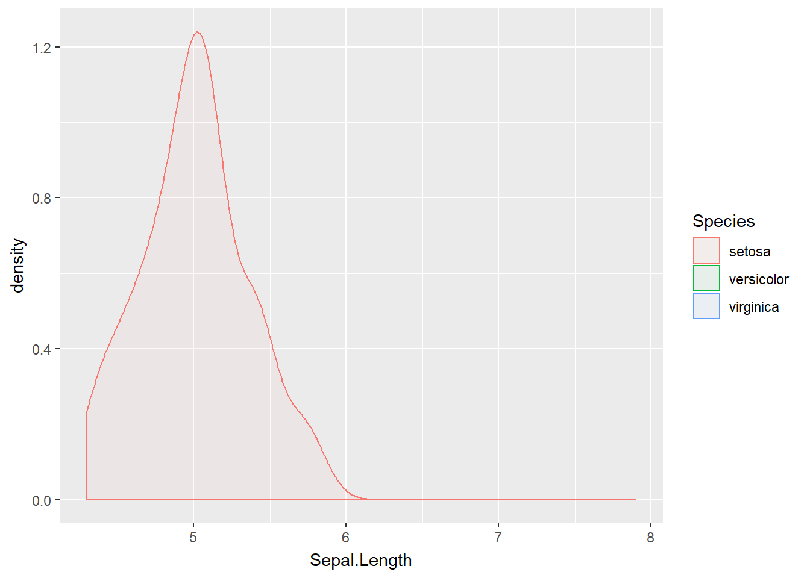
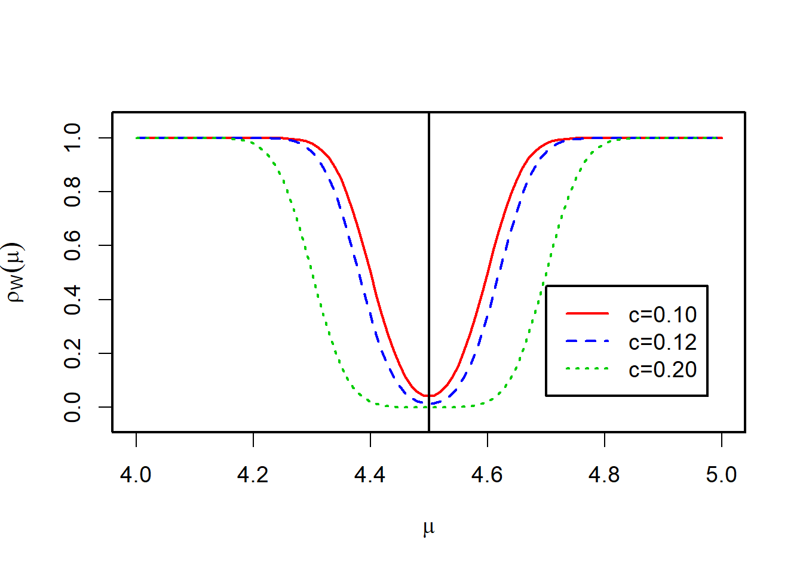

第 3 章 假设检验
3.1 女士品茶
R. A. Fisher 的名著《实验设计》讲了一个最简单的实验：女士品茶。这个故事非常有名，以至于Salsburg 的统计学通俗读物就以它命名：《女士品茶：统计学如何变革了科学和生活》。
先回顾一下这个故事。在英国的Rothamsted实验站，Fisher给一位名叫Muriel Bristol的女士倒了一杯茶，但是Bristol 表示，自己更喜欢先将牛奶倒入杯中，再倒入茶（也就是大街小巷常见的奶茶）。这位女士号称能够分辨先倒茶和先倒牛奶的区别。作为实验设计的鼻祖，Fisher 当然想用实验检验一下：这位女士的味觉是否有这么敏锐？检验如下命题是否可以接受：
假设H: 该女士无此种鉴别能力
他准备了10杯调好的奶茶（两种顺序的都有）给该女士鉴别，结果那位女士竟然能够正确地分辨出10杯奶茶中的每一杯的调制顺序。
如何做出你的判断？如果Bristol并没有任何分辨能力，仅凭运气，她也可能全部答对。不过这个事件的概率是\(2^{-10}\approx 9.77\times10^{-4}\). 这是一个小概率事件。所以，若是Bristol全部答对，那么“她无此种鉴别能力”这个假设就和数据不太相容，可以拒绝这个假设。假如该女士只猜对了8杯，又该如何判断？更一般地，若答对\(k\)杯, 如何根据\(k\)的值做出合理的判断？这时候我们的答案可能就模棱两可了，因此有必要针对这类问题建立严格的分析框架，并给出合理的决策规则。
更多的例子：
某产品的次品率是否不超过\(3\%\)？
男生群体平均身高是否大于女生群体平均身高？
身高是否服从正态分布？
抽烟与慢性支气管炎是否有关？
从上述例子中不难发现，所关心的问题归纳为“是”与“否”的判断，并非给出一个具体的 数或者区间，这区别与参数估计问题。我们把这类问题称为假设检验问题(Hypothesis Tests)。
3.2 基本概念
对总体的某种规律提出一个假设，通过样本数据来推断，决定是否拒绝这一假设，这样的统计活动成为假设检验。本节考虑参数形式的假设检验，给出相关概念和假设检验的思想。
例 3.1 (Fisher’s iris flower data set) Fisher的鸢尾花数据集是个著名的数据集，是为了量化鸢尾花形态上的区别而收集得到的。它包含了三类鸢尾花——山鸢尾(Setosa)、杂色鸢尾(Versicolour)、 维吉尼亚鸢尾(Virginica)的花萼(sepal)、花瓣(petal)的长度与宽度。
下图展示了花萼长度的核密度估计以及部分数据, 完整数据点击这里

| Sepal.Length | Sepal.Width | Petal.Length | Petal.Width | Species | |
|---|---|---|---|---|---|
| 1 | 5.1 | 3.5 | 1.4 | 0.2 | setosa |
| 2 | 4.9 | 3.0 | 1.4 | 0.2 | setosa |
| 3 | 4.7 | 3.2 | 1.3 | 0.2 | setosa |
| 51 | 7.0 | 3.2 | 4.7 | 1.4 | versicolor |
| 52 | 6.4 | 3.2 | 4.5 | 1.5 | versicolor |
| 53 | 6.9 | 3.1 | 4.9 | 1.5 | versicolor |
| 101 | 6.3 | 3.3 | 6.0 | 2.5 | virginica |
| 102 | 5.8 | 2.7 | 5.1 | 1.9 | virginica |
| 103 | 7.1 | 3.0 | 5.9 | 2.1 | virginica |
考虑以下几个问题：
假设有个植物学家跟你说，通过基因组分析表明，山鸢尾(Setosa)花萼长度的均值是4.5cm，他这个论断是否可信？
另一位植物学家说山鸢尾(Setosa)花萼长度的均值是一个不小于4.5cm的数，但具体是多少就不清楚了，那么他这个论断是否又可信？
山鸢尾(Setosa)和杂色鸢尾(Versicolour)两种花的花萼长度的均值有没有显著差异？
不妨设\(X,Y\)分别为山鸢尾(Setosa)和杂色鸢尾(Versicolour)花萼长度的两个总体，\(\mu_1,\mu_2\)分别为它们的均值。问题1要检验\(\mu_1=4.5\)是否成立，问题2检验\(\mu_1\ge 4.5\)是否成立，而问题3则检验\(\mu_1=\mu_2\)是否成立。假设检验需要明确所讨论命题及其对立的命题。比如，对于问题1，我们关心\(\mu_1=4.5\)以及它的对立面\(\mu_1\neq 4.5\)哪个成立，可表示为
\[\begin{equation} H_0:\mu_1=4.5\ vs.\ H_1:\mu_1\neq 4.5,\tag{3.1} \end{equation}\]
其中\(H_0\)称为原假设/零假设(Null Hypothesis)，\(H_1\)称为备选假设/对立假设/备择假设(Alternative Hypothesis)。检验的目标是通过样本数据判断\(H_0\)成立还是\(H_1\)成立，最终的结论只能有一个。
更一般地，设总体来自某一参数分布族\(\{F(x,\theta),\theta\in\Theta\}\), 其中\(\Theta\)为参数空间，包含所有可能的参数。假设检验问题的基本形式为
\[\begin{equation} H_0:\theta \in \Theta_0\ vs. \ H_1:\theta \in \Theta_1,\tag{3.2} \end{equation}\]
其中\(\varnothing\neq \Theta_0,\Theta_1\subset \Theta,\Theta_0\cap \Theta_1=\varnothing\). 最常见的情况\(\Theta_1=\Theta-\Theta_0\).
简单原假设(simple null)：\(\Theta_0\)只包含一个点，如\(H_0:\theta=\theta_0\)
复杂原假设(composite null)：\(\Theta_0\)只包含多个点，如\(H_0:\theta\le \theta_0\)
同样地，对于备选假设也有简单和复杂两种分类。如果原假设和备选假设都是简单的，那么称该检验是简单假设检验(simple hypothesis test)。
备选假设通常有三种形式：
- 双边(two-sided)：\(H_1:\theta\neq \theta_0\)
- 单边(one-sided)：\(H_1:\theta> \theta_0\)
- 单边(one-sided)：\(H_1:\theta< \theta_0\)
假设检验基于样本数据作出接受或者拒绝\(H_0\)的判断。这相当于把样本空间划分成两个互不相交的部分\(W\)和\(\bar{W}\), 当样本属于\(W\)时就拒绝\(H_0\); 否则接受\(H_0\). 我们称\(W\)为该检验的拒绝域(rejection region)，而\(\bar W\)为接受域(acceptance region). 由于两者是互为补集的关系，下面只关注于拒绝域。一个拒绝域决定一种检验法则。
为了解决假设检验问题(3.1)，不妨假设山鸢尾花萼长度\(X\sim N(\mu,0.12)\)，其中\(\mu\)未知。 由于\(\mu\)未知，我们可以用\(\bar X\)作为\(\mu\)的一种估计，当\(\bar X\)偏离4.5比较远时，我们就有理由拒绝\(H_0:\mu=4.5\)的假设，故一种可行的拒绝域为
\[W=\{x_{1{:}n}:|\bar x-4.5|>c\},\] 其中\(c\)为待定的常数。R中的iris数据集给出了50个山鸢尾花萼长度的数据，样本均值\(\bar x=5.006\) cm。所以，\(|\bar x-4.5|=0.506\)，如果\(0.506>c\)则拒绝原假设，否则接受原假设。我们后面将讨论如何选择合适的常数\(c\)。
由于样本的随机性，检验不可能\(100\%\)正确，有可能出现错误。注意到客观事实只有两种可能的结果，要么原假设成立，要么备择假设成立；而检验的结果也只有两种可能，接受或者拒绝原假设。因此有下列四种情况：其中两种检验结果符合实际，另外两种则与实际相悖，对应所谓的两类错误。
| 接受原假设 | 拒绝原假设 | |
|---|---|---|
| 原假设为真 | 正确 | 第一类（拒真, Type I）错误 |
| 备择假设为真 | 第二类（纳伪, Type II）错误 | 正确 |
假设检验的核心问题是如何控制犯两类错误的概率。值得注意的是，这两个概率为条件概率。犯第一类错误的概率常用\(\alpha\)表示，其定义为：
\[\alpha = P(X_{1{:}n}\in W|H_0).\]
犯第二类错误的概率常用\(\beta\)表示，其定义为：
\[\beta = P(X_{1{:}n}\notin W|H_1).\]
对于参数假设检验(3.2)，则两类错误发生的概率分别为：
\[\begin{align*} \alpha &= P_\theta(X_{1{:}n}\in W)=\rho_W(\theta),\ \theta\in\Theta_0,\\ \beta &= P_\theta(X_{1{:}n}\notin W)=1-\rho_W(\theta),\ \theta\in\Theta_1, \end{align*}\]
其中\(\rho_W(\theta)=P_\theta(X_{1{:}n}\in W)\)表示在\(X_i\stackrel{iid}\sim F_\theta\)下事件\(\{X_{1{:}n}\in W\}\)的概率。我们称\(\rho_W(\theta)\)为功效函数，其中\(\theta\in\Theta\)。如果原假设是简单的\(H_0:\theta=\theta_0\)，这时第一类错误发生的概率为\(\alpha=P_{\theta_0}(X_{1{:}n}\in W)\), 只有一种可能；如果原假设是复杂的，则\(\alpha\)的取值有很多种可能，取决于真实的参数\(\theta\)的取值，不管怎样，\(\alpha=\rho_W(\theta)\)，其中\(\theta\in\Theta_0\). 当真实的\(\theta\in\Theta_1\)时，我们称\(\rho_W(\theta)\)为检验的功效，不难发现\(\beta+\rho_W(\theta)=1\).
然而，在大多数情况下，这两类错误的概率相背而驰。在样本量不变的情况下，如果其中一个变小则另一个变大。见下面例子。
- 该检验的功效函数为：
\[\begin{align*} \rho_W(\mu)&=P_{\mu}(|\bar{X}-4.5|> c)\\ &=1-\Phi\left(\sqrt{50/0.12}(4.5-\mu+c))+\Phi(\sqrt{50/0.12}(4.5-\mu-c)\right). \end{align*}\]
犯第一类错误的概率为: \(\alpha =\rho_W(4.5)\).
犯第二类错误的概率为: \(\beta= 1-\rho_W(\mu)\)，其中\(\mu\neq 4.5\).

由上图可以发现：\(c\)增大，第一类错误发生的概率\(\alpha\)变小，检验的功效变小，第二类错误发生的概率\(\beta\)变大。一般情况下，在样本量不变的前提下，两类错误不能同时减小。
考虑到两类错误不能够同时被控制，在统计学中， 拒绝域的选取准则为：在保证犯第一类错误的概率不超过一定水平的前提下，选择犯第二类错误的概率尽可能小（等价地，检验的功率尽可能大）的拒绝域\(W\).
前面已提到，如果原假设是复合的，那么犯第一类错误的概率是不确定的，为了控制犯第一类错误的概率，我们对其最坏情况进行控制，使其在水平\(\alpha\in(0,1)\)下，即
\[\begin{equation} \sup_{\theta\in\Theta_0} \rho_W(\theta)= \alpha.\tag{3.3} \end{equation}\]
该水平\(\alpha\)称为拒绝域\(W\)的检验水平/显著性水平(level of significance)。一般情况下，\(\alpha\)为检验之前确定的比较小的数，如\(0.1,0.05,0.01\)。 如果给定\(\alpha\)，不存在一个\(W\)使得式(3.3)成立，则将式(3.3)中的“\(=\)”替换成“\(\le\)”，这同样保证犯第一类错误控制在\(\alpha\)下。
小概率原理：小概率事件在一次试验中是几乎不发生的。若\(H_0\)为真，样本落在拒绝域\(W\)是小概率事件，不应发生。如发生，则拒绝原假设。
如何选择显著性水平?
人们自然会产生这样的问题：概率小到什么程度才当作“小概率事件”呢？这要据实际情况而定，例如即使下雨的概率为10%，仍有人会因为它太小而不带雨具。但某航空公司的事故率为1%，人们就会因为它太大而不敢乘坐该公司的飞机，通常把概率不超过0.05 (或0.01)的事件当作“小概率事件”。为此在假设检验时，必须先确定小概率即显著性的值\(\alpha\) (即不超过\(\alpha\)的概率认为是小概率)。
然而，正如前面提到，只是控制犯第一类错误控制在水平\(\alpha\)下是远远不够的，而且满足这个条件的检验数不胜数。因为第二类错误不能忽略。因此，如果在保证\(\sup_{\theta\in\Theta_0} \rho_W(\theta)= \alpha\)成立的前提下，使得犯第二类错误的概率最小，或者等价地，检验的功效最大化。一般情况下，这个问题不容易解决，不一定存在所谓的“最好”检验。为此下节将引入一致最大功效的概念。
3.3 UMP检验和似然比检验
3.3.1 UMP检验的定义
\[\rho_W(\theta)\ge \rho_{W'}(\theta),\ \forall \theta\in \Theta_1.\]
\[\rho_W(\theta)\ge \rho_{W'}(\theta),\ \forall \theta\in \Theta_1.\]
注：UMP意味着在犯第一类错误的概率不超过\(\alpha\)的前提下，犯第二类错误的概率最小。无偏性是指如果备选假设成立，拒绝原假设的概率不小于显著性水平\(\alpha\). 注意到此时检验的结果正确，该概率不应小于犯第一类错误的概率。下节将给出如何构造UMP的检验方法。
3.3.2 似然比检验方法
令\(X\)为正面朝上的次数，\(\theta\)为硬币正面朝上的概率，则\(X\sim B(10,\theta)\), \(\theta\in\{0.5,0.7\}\)。假设检验为：
\[H_0: \theta=0.5\ vs.\ H_1:\theta=0.7.\]
不难计算，两种情况下\(X\)的分布列为：
| \(x\) | 0 | 1 | 2 | 3 | 4 | 5 | 6 | 7 | 8 | 9 | 10 |
|---|---|---|---|---|---|---|---|---|---|---|---|
| \(H_0\) | .0010 | .0098 | .0439 | .1172 | .2051 | .2461 | .2051 | .1172 | .0439 | .0098 | .0010 |
| \(H_1\) | .0000 | .0001 | .0014 | .0090 | .0368 | .1029 | .2001 | .2668 | .2335 | .1211 | .0282 |
假如观测到两次正面朝上，则有
\[P(X=2|\theta=0.5)/P(X=2|\theta=0.7)\approx 30.\] 该比值称为似然比(likelihood ratio , LR)，表明相比第二枚硬币，第一枚硬币有大概30倍的可能性产生该结果。这个结果明显支持选择第一枚硬币。反之，如果观测到八次正面朝上，似然比
\[P(X=8|\theta=0.5)/P(X=8|\theta=0.7)\approx 0.19,\] 这个结果支持第二枚硬币。似然比在接下来的假设检验中扮演重要的角色。
定义 3.4 设\(L(x_{1{:}n};\theta)\)为似然函数，\(\theta_1,\theta_2\in\Theta\)。两个参数\(\theta_1,\theta_2\)下似然函数的比值称为似然比，即
\[LR=\frac{L(x_{1{:}n};\theta_2)}{L(x_{1{:}n};\theta_1)}.\]
考虑最简单的假设检验\((\theta_1\neq \theta_2)\)：
\[\begin{equation} H_0: \theta=\theta_1\ vs.\ \theta=\theta_2. \tag{3.4} \end{equation}\]
似然比检验的拒绝域为：
\[\begin{equation} W=\{x_{1{:}n}:\frac{L(x_{1{:}n};\theta_2)}{L(x_{1{:}n};\theta_1)}> \lambda\}=\{x_{1{:}n}:LR>\lambda\}, \tag{3.5} \end{equation}\]
其中\(\lambda\ge 0\)满足
\[P_{\theta_1}(X_{1{:}n}\in W)=\alpha.\]
证明. 只证明连续总体的情况，离散总体类似。此时，\(P_{\theta}(X_{1{:}n}\in W)=\int_W L(x_{1{:}n};\theta) d x_{1{:}n}\). 对任意拒绝域\(W'\)满足\(P_{\theta_1}(X_{1{:}n}\in W')\le\alpha\)有
\[\begin{align*} P_{\theta_2}(X_{1{:}n}\in W)-P_{\theta_2}(X_{1{:}n}\in W') &= \int_W L(x_{1{:}n};\theta_2) d x_{1{:}n}-\int_{W'} L(x_{1{:}n};\theta_2) d x_{1{:}n}\\& =\int_{W-W'} L(x_{1{:}n};\theta_2) d x_{1{:}n}-\int_{W'-W} L(x_{1{:}n};\theta_2) d x_{1{:}n}\\ &\ge \lambda \left(\int_{W-W'} L(x_{1{:}n};\theta_1) d x_{1{:}n}-\int_{W'-W} L(x_{1{:}n};\theta_1) d x_{1{:}n}\right)\\ &=\lambda \left(\int_{W} L(x_{1{:}n};\theta_1) d x_{1{:}n}-\int_{W'} L(x_{1{:}n};\theta_1) d x_{1{:}n}\right)\\ &=\lambda(\alpha-P_{\theta_1}(X_{1{:}n}\in W'))\ge 0. \end{align*}\]
这表明\(W\)的功效不小于\(W'\)的功效，根据UMP的定义，得证。
该定理为著名的Neyman-Pearson引理，是假设检验中非常重要的结果，而且该UMP拒绝域在概率意义下是唯一的。但注意到，该结论只适用简单假设，且\(\lambda\)必须满足\(P_{\theta_1}(X_{1{:}n} \in W)=\alpha\).
证明见陈家鼎等编著的教材P71页。
3.3.3 正态分布均值的UMP检验
例 3.4 假设总体为\(N(\mu,\sigma^2)\), 其中\(\sigma^2\)已知， 样本为\(X_{1{:}n}\). 考虑检验水平为\(\alpha\)的检验问题\((\mu_2>\mu_1)\),
\[H_0:\mu=\mu_1\ vs. \ H_1:\mu=\mu_2.\]解. 似然比检验的拒绝域为：\(W=\{x_{1{:}n}:\frac{L(x_{1{:}n};\mu_2)}{L(x_{1{:}n};\mu_1)}> \lambda\}\). 似然比为
\[LR=\frac{L(x_{1{:}n};\mu_2)}{L(x_{1{:}n};\mu_1)}=\prod_{i=1}^n\frac{f(x_i;\mu_2,\sigma^2)}{f(x_i;\mu_1,\sigma^2)}=e^{\frac{n(\mu_2-\mu_1)(2\bar x-\mu_1-\mu_2)}{2\sigma^2}}.\]
\(LR>\lambda\)等价于\(\bar x>C\), 其中\(P_{\mu_1}(\bar X> C)=\alpha\)。注意到\(\bar X \stackrel{H_0}\sim N(\mu_1,\sigma^2/n)\), 于是有 \(C=\mu_1+u_{1-\alpha}\sigma/\sqrt{n}\), 所以似然比检验的拒绝域为
\[W=\{x_{1{:}n}:\bar x> \mu_1+u_{1-\alpha}\sigma/\sqrt{n}\}.\]思考：与双侧拒绝域比较：\(W'=\{x_{1{:}n}:|\bar x-\mu_1|> u_{1-\alpha/2}\sigma/\sqrt{n}\}\), 哪个功效大？
图 3.1: 单侧与双侧功效比较：红色虚线为单侧临界值，绿色虚线为双侧临界值
从上图中容易分析出，\(W\)的功效比\(W'\)的功效大，与N-P引理的结论吻合。
例 3.5 假设总体为\(N(\mu,\sigma^2)\), 其中\(\sigma^2\)已知。考虑检验水平为\(\alpha\)的检验问题\((\mu_2<\mu_1)\),
\[H_0:\mu=\mu_1\ vs. \ H_1:\mu=\mu_2.\]解. 似然比检验的拒绝域为：\(W=\{x_{1{:}n}:\frac{L(x_{1{:}n};\mu_2)}{L(x_{1{:}n};\mu_1)}> \lambda\}\). 似然比与上个例子一样，
\[LR=e^{\frac{n(\mu_2-\mu_1)(2\bar X-\mu_1-\mu_2)}{2\sigma^2}}\]
区别在于UMP拒绝域为\(W=\{x_{1{:}n}:\bar x<C\}\), \(C\)满足\(P_{\mu_1}(\bar X< C)=\alpha\), 则有\(C=\mu_1+u_{\alpha}\sigma/\sqrt{n}\), 所以似然比检验的拒绝域为\(W=\{x_{1{:}n}:\bar x< \mu_1+u_{\alpha}\sigma/\sqrt{n}\}\).例 3.6 假设总体为\(N(\mu,\sigma^2)\), 其中\(\sigma^2\)已知， 样本为\(X_{1{:}n}\). 分别求以下假设检验的一致最大功效拒绝域：
\[H_0:\mu=\mu_1\ vs. \ H_1:\mu>\mu_1,\]
\[H_0:\mu\le\mu_1\ vs. \ H_1:\mu>\mu_1,\]
\[H_0:\mu=\mu_1\ vs. \ H_1:\mu<\mu_1,\]
\[H_0:\mu\ge\mu_1\ vs. \ H_1:\mu<\mu_1.\]
解. 先考虑第一种情况\(H_0:\mu=\mu_1\ vs. \ H_1:\mu>\mu_1\). 取\(\mu_2\)为大于\(\mu_1\)的任意常数，构造例3.5中的简单检验
\[H_0:\mu=\mu_1\ vs. \ H_1:\mu=\mu_2.\] 设\(W'\)为满足\(P_{\mu_1}(X_{1{:}n}\in W')\le\alpha\)的任意拒绝域。注意到例3.5中的UMP拒绝域\(W=\{x_{1{:}n}:\bar x> \mu_1+u_{1-\alpha}\sigma/\sqrt{n}\}\)不依赖\(\mu_2\)的值。对于任意\(\mu_2>\mu_1\), 由于\(W\)是上述简单假设的UMP拒绝域，所以\(P_{\mu_2}(X_{1{:}n}\in W)\ge P_{\mu_2}(X_{1{:}n}\in W')\). 根据UMP的定义，该拒绝域\(W\)用于复合的备选假设\(H_1:\mu>\mu_1\)同样是UMP的。
现在证明\(W\)用于第二种情况\(H_0:\mu\le\mu_1\ vs. \ H_1:\mu>\mu_1\)同样是UMP。注意到功效函数
\[\rho_W(\mu)=P_\mu(X_{1{:}n}\in W)= P_\mu(\bar X> \mu_1+u_{1-\alpha}\sigma/\sqrt{n})\] 在\(\mu\le \mu_1\)上是单调递增的。所以，\(\sup_{\mu\le\mu_1}\rho_W(\mu)=\rho_W(\mu_1)=\alpha\). 设\(W'\)为满足\(\sup_{\mu\le\mu_1}P(X_{1{:}n}\in W')\le \alpha\)的任意拒绝域。所以\(P_{\mu_1}(X_{1{:}n}\in W')\le \alpha\). 注意到\(W\)为上述简单假设检验的UMP拒绝域，所以它比\(W'\)更有效。对于任意\(\mu_2>\mu_1\), 同样有\(P_{\mu_2}(X_{1{:}n}\in W)\ge P_{\mu_2}(X_{1{:}n}\in W')\). 根据UMP的定义，该拒绝域\(W\)用于第二种情况是UMP。
同样地，后面两种情况的UMP拒绝域和例3.6一样，即
\[W=\{x_{1{:}n}:\bar x< \mu_1+u_{\alpha}\sigma/\sqrt{n}\}.\]3.4 单参数指数型分布族
为了得到一般UMP拒绝域的一般形式，本节考虑一大类分布族——单参数指数型分布族。
定义 3.5 设\(X\)的可能的集合为\(\mathcal{X}\). 称\(X\)服从单参数指数型分布(single-parameter exponential family)，若\(X\)的密度函数（或者分布列）有下列表达式
\[\begin{equation} f(x;\theta) = S(\theta)h(x)\exp\{Q(\theta)V(x)\}, \tag{3.6} \end{equation}\]
其中\(\theta\in\Theta=(a,b),-\infty\le a<b\le \infty,S(\theta)>0,x\in \mathcal{X},h(x)>0,Q(\theta)\)是\(\theta\)的严格增函数。常见的分布都是指数型分布，比如：
指数分布：\(f(x;\lambda)=\lambda e^{-\lambda x}\), \(Q(\lambda)=\lambda\), \(V(x)=-x\)
Poisson分布：\(f(x;\lambda)=\frac{e^{-\lambda}\lambda^x}{x!}=\frac{e^{-\lambda}e^{\log(\lambda) x}}{x!}\), \(Q(\lambda)=\log(\lambda)\), \(V(x)=x\)
正态分布(\(\sigma^2\)已知)：\(f(x;\mu) = \frac{1}{\sqrt{2\pi}\sigma}e^{-\frac{(x-\mu)^2}{2\sigma^2}}\), \(Q(\mu)=\mu/\sigma^2\), \(V(x)=x\)
正态分布(\(\mu\)已知)：\(Q(\sigma^2)=-\frac{1}{2\sigma^2}\), \(V(x)=(x-\mu)^2\)
我们将在单参数分布族总体下考虑以下五种常见的检验类型并给出UMP/UMPU拒绝域的一般形式。涉及的证明将省略，详情可参考陈家鼎等编著的教材P72-P87.
\[H_0:\theta\le \theta_1\ vs.\ H_1:\theta>\theta_1,\]
\[H_0:\theta\ge \theta_1\ vs.\ H_1:\theta<\theta_1,\]
\[H_0:\theta\notin (\theta_1,\theta_2)\ vs.\ H_1:\theta\in (\theta_1,\theta_2),\]
\[H_0:\theta\in [\theta_1,\theta_2]\ vs.\ H_1:\theta\notin [\theta_1,\theta_2].\]
\[H_0:\theta=\theta_0\ vs.\ H_1:\theta\neq\theta_0\]
定理 3.3 考虑单参数指数型分布(3.6)，给定检验问题
\[H_0:\theta\le \theta_1\ vs.\ H_1:\theta>\theta_1.\]
对\(\alpha\in(0,1)\), 若存在\(C\)满足
\[P_{\theta_1}\left(\sum_{i=1}^n V(X_i)>C\right)=\alpha,\]
则检验水平为\(\alpha\)的UMP拒绝域为：\[W=\{x_{1{:}n}:\sum_{i=1}^n V(x_i)>C\}.\]定理 3.4 考虑单参数指数型分布(3.6)，给定检验问题
\[H_0:\theta\ge \theta_1\ vs.\ H_1:\theta<\theta_1.\]
对\(\alpha\in(0,1)\), 若存在\(C\)满足
\[P_{\theta_1}\left(\sum_{i=1}^n V(X_i)<C\right)=\alpha,\]
则检验水平为\(\alpha\)的UMP拒绝域为：
\[W=\{x_{1{:}n}:\sum_{i=1}^n V(x_i)<C\}.\]
例 3.7 假设总体为\(N(\mu,\sigma^2)\), 其中\(\sigma^2\)已知， 样本为\(X_{1{:}n}\). 求下列检验的UMP
\[H_0:\mu\le\mu_1\ vs. \ H_1:\mu>\mu_1.\]
解. 因为在指数分布族形式中\(V(x)=x\), UMP拒绝域为
\[W=\{x_{1{:}n}:\sum_{i=1}^nx_i>C\}=\{x_{1{:}n}:\bar x>C'\},\]
其中\(C'\)满足 \(P_{\mu_1}(\bar X>C')=\alpha\), \(C'=\mu_1+u_{1-\alpha}\sigma/\sqrt{n}.\)例 3.8 假设总体为\(N(\mu,\sigma^2)\), 其中\(\mu\)已知，样本为\(X_{1{:}n}\). 求下列检验的UMP
\[H_0:\sigma^2\le\sigma^2_1\ vs. \ H_1:\sigma^2>\sigma^2_1.\]
解. 因为在指数分布族形式中\(V(x)=(x-\mu)^2\), UMP拒绝域为
\[W=\{x_{1{:}n}:\sum_{i=1}^n(x_i-\mu)^2>C\}=\{x_{1{:}n}:\sum_{i=1}^n\frac{(x_i-\mu)^2}{\sigma^2_1}>C'\},\]
其中\(C'\)满足\(P_{\sigma^2_1}(\sum_{i=1}^n\frac{(X_i-\mu)^2}{\sigma^2_1}>C')=\alpha\), 所以\(C'=\chi^2_{1-\alpha}(n)\).定理 3.5 考虑单参数指数型分布(3.6)，给定检验问题
\[ H_0:\theta\notin (\theta_1,\theta_2)\ vs.\ H_1:\theta\in (\theta_1,\theta_2). \]
令
\[W=\{x_{1{:}n}:C_1<\sum_{i=1}^n V(x_i)<C_2\}.\]
若存在\(C_1,C_2\)满足
\[P_{\theta_1}(X_{1{:}n}\in W)=P_{\theta_2}(X_{1{:}n}\in W)=\alpha,\]
则检验水平为\(\alpha\)的一致最大功效的拒绝域为\(W\).定理 3.6 考虑单参数指数型分布(3.6)，给定检验问题
\[H_0:\theta\in [\theta_1,\theta_2]\ vs.\ H_1:\theta\notin [\theta_1,\theta_2].\]
令
\[W=\{x_{1{:}n}:\sum_{i=1}^n V(x_i)\notin[C_1,C_2]\}.\]
若存在\(C_1,C_2\)满足
\[P_{\theta_1}(X_{1{:}n}\in W)=P_{\theta_2}(X_{1{:}n}\in W)=\alpha\]
则检验水平为\(\alpha\)的一致最大功效无偏(UMPU)的拒绝域为\(W\).定理 3.7 考虑上述单参数指数型分布，给定检验问题
\[H_0:\theta=\theta_0\ vs.\ H_1:\theta\neq\theta_0.\]
令\(W=\{x_{1{:}n}:\sum_{i=1}^n V(x_i)\notin[C_1,C_2]\}.\)
若存在\(C_1,C_2\)满足
\[P_{\theta_0}(X_{1{:}n}\in W)=\alpha\]
\[E_{\theta_0}\left[1\{X_{1{:}n}\in W\}\sum_{i=1}^n V(X_i)\right]=\alpha E_{\theta_0}\left[\sum_{i=1}^n V(X_i)\right],\]
则检验水平为\(\alpha\)的一致最大功效无偏(UMPU)的拒绝域为\(W\).推论 3.1 考虑上述单参数指数型分布，给定检验问题
\[H_0:\theta=\theta_0\ vs.\ H_1:\theta\neq\theta_0.\]
如果在\(\theta=\theta_0\)下，\(T(x_{1{:}n}) = \sum_{i=1}^n V(X_i)\)的分布关于某数\(r_0\)对称，取
\[W=\{x_{1{:}n}:|T(x_{1{:}n})-r_0|>C\}.\]
若存在\(C\)满足
\[P_{\theta_0}(X_{1{:}n}\in W)=\alpha,\]
则检验水平为\(\alpha\)的一致最大功效无偏(UMPU)的拒绝域为\(W\).例 3.9 假设总体为\(N(\mu,\sigma^2)\), 其中\(\sigma^2\)已知。求下列检验的UMPU拒绝域
\[H_0:\mu=\mu_0\ vs. \ H_1:\mu\neq\mu_0.\]解. 因为在指数分布族形式中\(V(x)=x\), 此时\(T(x_{1{:}n})=\sum_{i=1}^nX_i\). 在\(\mu=\mu_0\)下，\(T(X_{1{:}n})\sim N(n\mu_0,n\sigma^2)\), 故其分布关于\(r_0=n\mu_0\)对称，
UMPU拒绝域为
\[W=\{x_{1{:}n}:|T(x_{1{:}n})-n\mu_0|>C\}=\{x_{1{:}n}:|\bar x-\mu_0|>C'\},\]
其中\(C'\)满足\(P_{\mu_0}(|\bar X-\mu_0|>C')=\alpha\), 所以\(C'=u_{1-\alpha/2}\sigma/\sqrt{n}\).例 3.10 假设总体为\(N(\mu,\sigma^2)\), 其中\(\mu\)已知。求下列检验的UMPU拒绝域
\[H_0:\sigma^2=\sigma_0^2\ vs. \ H_1:\sigma^2\neq\sigma_0^2.\]解. 为方便起见，令\(T(x_{1{:}n})=\sum_{i=1}^n(X_i-\mu)^2/\sigma_0^2\). 这样， 在\(\sigma^2=\sigma_0^2\)下，\(T(X_{1{:}n})\sim \chi^2(n)\). UMPU拒绝域表示为 \(W=\{x_{1{:}n}:T(x_{1{:}n})\notin [C_1,C_2]\}\)，其中\(C_1,C_2\)满足
\[P_{\sigma^2_0}(T(X_{1{:}n})\notin W)=\int_{C_1}^{C_2} f(x;n) dx=1-\alpha,\]
\[E_{\sigma^2_0}[1\{X_{1{:}n}\notin W\}T(X_{1{:}n})]=\int_{C_1}^{C_2} x f(x;n)dx=(1-\alpha)E_{\sigma_0^2}[T(X_{1{:}n})]=n(1-\alpha).\]
其中，\(f(x;n)\)为\(\chi^2(n)\)的密度函数，即
\[f(x;n)=\frac{1}{2^{n/2}\Gamma(n/2)}x^{n/2-1}e^{-x/2}1\{x>0\}.\] 所以， \[\begin{align*} \int_{C_1}^{C_2} \frac{x}{n} f(x;n)dx&=\int_{C_1}^{C_2} \frac{x}{n} \frac{1}{2^{n/2}\Gamma(n/2)}x^{n/2-1}e^{-x/2}dx\\ &=\int_{C_1}^{C_2} f(x;n+2)dx=\int_{C_1}^{C_2} f(x;n) dx=1-\alpha. \end{align*}\]
实际上，求解\(C_1,C_2\)比较困难，为方便起见，不妨用平均法取\(C_1=\chi_{\alpha/2}^2(n), C_2=\chi_{1-\alpha/2}^2(n)\).3.4.1 小结
我们已经在单参数指数型分布总体下给出常见的假设检验的UMP/UMPU, 具体步骤可以归纳如下：
根据指数型分布写出检验统计量(test statistic): \(T(X_{1{:}n})=\sum_{i=1}^nV(X_i)\)，或者它的常数倍
根据假设检验的类型写出拒绝域\(W\)的形式，一般有
\[T(x_{1{:}n})>C,T(x_{1{:}n})<C,Tx_{1{:}n} \in (C_1,C_2),T(x_{1{:}n})\notin [C_1,C_2]\]
- 如果是只有一个待定参数\(C\)时，可以检验水平\(\alpha\)来得到\(C\)的值，即
\[P_{\theta_0}(T(X_{1{:}n}) \in W)=\alpha,\] 其中\(\theta_0\)为\(\Theta_0\)的边界点。
- 如果有两个待定参数\(C_1,C_2\)时, 可能还需另外一个等式来求解（比如双边假设检验）。
正态总体的期望的检验统计量为\(n\bar X\)或者\(\bar X\), 称为U检验；方差的检验统计量为\(\sum_{i=1}^n(X_i-\mu)^2\), 称为卡方检验。
3.5 广义似然比检验
似然比检验只适合简单假设检验，为了适用于复合假设检验情形，我们需要将似然比检验进行推广。 考虑一般的参数假设检验问题
\[H_0:\theta\in \Theta_0\ vs.\ H_1:\theta \notin \Theta_0.\]
定义广义似然比为：
\[\lambda(x_{1{:}n}):=\frac{\sup_{\theta\in \Theta}L(x_{1{:}n};\theta)}{\sup_{\theta\in \Theta_0}L(x_{1{:}n};\theta)}=\frac{L(x_{1{:}n};\hat\theta)}{L(x_{1{:}n};\hat\theta_0)},\]
其中\(\hat\theta\)为\(\theta\)的最大似然估计，\(\hat\theta_0\)为\(\theta\)限制在\(\Theta_0\)上的最大似然估计。
广义似然比拒绝域为：
\[W=\{x_{1{:}n}:\lambda(x_{1{:}n})>\lambda_0\},\]
其中\(\lambda_0\ge 1\)满足\(\sup_{\theta\in\Theta_0}P_{\theta}(X_{1{:}n}\in W)=\alpha\), \(\alpha\)为给定的显著性水平。
广义似然比检验的思想：如果\(H_0\)成立，则似然函数在\(\theta\in\Theta_0\)的最大值应当与全局最大值接近，如果两者相差很大，则有理由拒绝原假设。
注1：如果退化成简单检验问题，\(\Theta_0=\{\theta_1\},\ \Theta_1=\{\theta_2\}\)，则广义似然比简化为
\[\lambda(x_{1{:}n}):=\frac{\max(L(x_{1{:}n};\theta_1),L(x_{1{:}n};\theta_2))}{L(x_{1{:}n};\theta_1)}.\]
\(\lambda(x_{1{:}n})>\lambda_0\)等价于\(L(x_{1{:}n};\theta_2)/L(x_{1{:}n};\theta_1)>\lambda_0'\)，该形式与简单似然比拒绝域相同，故称之为“广义”似然比方法。
注2：广义似然比检验适用范围非常广，虽然它不一定是UMP的，但在多数情况下可以证明随着样本量\(n\to\infty\)，检验的功效收敛到1，也就是犯第二类错误的概率收敛到0.
注3：设充分统计量为\(\psi(x_{1{:}n})\), 由因子分解定理知，\(L(x_{1{:}n};\theta)=g(\psi(x_{1{:}n}),\theta)h(x_{1{:}n})\).
\[\begin{align*} \lambda(x_{1{:}n}):&=\frac{\sup_{\theta\in\Theta} g(\psi(x_{1{:}n}),\theta)h(x_{1{:}n})}{\sup_{\theta\in\Theta_0} g(\psi(x_{1{:}n}),\theta)h(x_{1{:}n})}\\&=\frac{\sup_{\theta\in\Theta} g(\psi(x_{1{:}n}),\theta)}{\sup_{\theta\in\Theta_0} g(\psi(x_{1{:}n}),\theta)}=:\ell(\psi(x_{1{:}n})). \end{align*}\]
可以看出，广义似然比是充分统计量的函数，所以拒绝域可以写成
\[W=\{x_{1{:}n}:\lambda(x_{1{:}n})>\lambda_0\}=\{x_{1{:}n}:\psi(x_{1{:}n}) \in B\}.\]
问题转化成求解集合\(B\)使得检验水平为\(\alpha\). 如果充分统计量在给定\(\theta=\theta_0\)下容易得到，这个问题则比较容易处理。 下面只针对正态总体来分析。
3.5.1 正态总体的假设检验
设总体\(X\sim N(\mu,\sigma^2)\)。前面我们已经分析了正态总体下参数的简单假设检验问题，现在利用广义似然比来分析复合假设检验。只考虑下面三种情况：
\[\theta=\theta_0\ vs.\ \theta\neq \theta_0\]
\[\theta\le \theta_0\ vs.\ \theta>\theta_0\]
\[\theta\ge \theta_0\ vs.\ \theta<\theta_0\]
其中\(\theta=\mu\) 或者 \(\sigma^2\), 另外一个参数已知或者未知（分情况讨论）。
似然函数为：
\[L(\mu,\sigma^2)=(2\pi \sigma^2)^{-n/2}\exp\left(-\frac 1{2\sigma^2}\sum_{i=1}^n(x_i-\mu)^2\right).\]
期望的假设检验（方差已知）： 考虑双边假设检验
\[H_0:\mu=\mu_0\ vs.\ H_1:\mu\neq \mu_0.\]
因为方差\(\sigma^2\)已知，\(\theta=\mu\)的最大似然估计为\(\bar X\)。此时的广义似然比为
\[\begin{align*} \lambda(x_{1{:}n})&=\frac{L(\bar x,\sigma^2)}{L(\mu_0,\sigma^2)}\\ &=\exp\left(\frac{\sum_{i=1}^n[(x_i-\mu_0)^2-(x_i-\bar x)^2]}{2\sigma^2}\right)\\ &=\exp\left(\frac{n(\bar x-\mu_0)^2}{2\sigma^2}\right). \end{align*}\]
则拒绝域为\(W=\{x_{1{:}n}:|\bar x-\mu_0|>c\}\)，其中\(c\)满足\(P_{\mu_0}(|\bar X-\mu_0|>c)=\alpha\)。所以，\(c=u_{1-\alpha/2}\sigma/\sqrt{n}\). 令
\[U:=\frac{\bar X-\mu_0}{\sigma/\sqrt{n}}.\]
当\(|U|>u_{1-\alpha/2}\)时，拒绝\(H_0\). 它称为该检验的检验统计量，\(U\stackrel{H_0}\sim N(0,1)\)。这个检验也称U检验（或者Z检验）。
接下来考虑单边假设检验
\[H_0:\mu\le \mu_0\ vs.\ H_1:\mu> \mu_0.\]
在\(\mu\le \mu_0\)下，\(\mu\)的最大似然估计为\(\hat\mu_0=\min(\bar X,\mu_0)\). 此时广义似然比为
\[\begin{align*} \lambda(x_{1{:}n})=\frac{L(\bar x,\sigma^2)}{L(\min(\bar X,\mu_0),\sigma^2)}=\begin{cases} e^\frac {n(\bar x-\mu_0)^2}{2\sigma^2},&\ \bar x> \mu_0\\ 1,&\ \bar x\le\mu_0. \end{cases} \end{align*}\]
注意到\(\lambda(x_{1{:}n})\)应当严格大于1，否则拒绝域为样本全空间，故\(\bar x>\mu_0\)且\(\lambda(x_{1{:}n})>\lambda_0\ge 1\). 这等价于拒绝域为\(W=\{x_{1{:}n}:\bar x-\mu_0>c\}\)，其中\(c\ge 0\)满足
\[\sup_{\mu\le\mu_0}P_{\mu}(\bar X-\mu_0>c)=P_{\mu_0}(\bar X-\mu_0>c)=\alpha.\]
所以，\(c=u_{1-\alpha}\sigma/\sqrt{n}\)（注意到\(\alpha\)是接近于0的正数，所以\(c>0\)）。 当\(U>u_{1-\alpha}\)时，拒绝\(H_0\).
类似地，对于另一种单边假设检验
\[H_0:\mu\ge \mu_0\ vs.\ H_1:\mu< \mu_0,\]
当\(U<u_{\alpha}\)时，拒绝\(H_0\).
这三种情况汇总如下：
| \(H_1\) | \(\mu\neq \mu_0\) | \(\mu> \mu_0\) | \(\mu< \mu_0\) |
|---|---|---|---|
| 拒绝域 | \(|u|>u_{1-\alpha/2}\) | \(u>u_{1-\alpha}\) | \(u<u_{\alpha}\) |
期望的假设检验（方差未知）：在方差未知的情况下考虑期望的检验问题，相应的检验统计量为
\[T=\frac{\bar X-\mu_0}{S_n/\sqrt{n-1}}=\frac{\bar X-\mu_0}{S_n^*/\sqrt{n}}.\]
当\(\mu=\mu_0\)时，\(T\sim t(n-1)\). 该检验称为t检验。拒绝域\(W\)形式如下：
| \(H_1\) | \(\mu\neq \mu_0\) | \(\mu> \mu_0\) | \(\mu< \mu_0\) |
|---|---|---|---|
| 拒绝域 | \(|t|>t_{1-\alpha/2}(n-1)\) | \(t>t_{1-\alpha}(n-1)\) | \(t<t_{\alpha}(n-1)\) |
图 3.2: 均值的假设检验
方差的假设检验（期望已知）： 检验统计量为
\[V_1 = \frac{1}{\sigma^2_0}\sum_{i=1}^n(X_i-\mu)^2.\]
当\(\sigma^2=\sigma^2_0\)时，\(V_1\sim \chi^2(n)\)。该检验称为卡方检验。拒绝域\(W\)形式如下：
| \(H_1\) | \(\sigma^2\neq \sigma^2_0\) | \(\sigma^2> \sigma^2_0\) | \(\sigma^2< \sigma^2_0\) |
|---|---|---|---|
| 拒绝域 | \(v_1>\chi^2_{1-\alpha/2}(n)\) 或 \(v_1<\chi^2_{\alpha/2}(n)\) | \(v_1>\chi^2_{1-\alpha}(n)\) | \(v_1<\chi^2_{\alpha}(n)\) |
方差的假设检验（期望未知）： 检验统计量为
\[V_2 = \frac{1}{\sigma^2_0}\sum_{i=1}^n(X_i-\bar X)^2=nS_n^2/\sigma_0^2.\]
当\(\sigma^2=\sigma^2_0\)时，\(V_2\sim \chi^2(n-1)\)。该检验同样为卡方检验。拒绝域\(W\)形式如下：
| \(H_1\) | \(\sigma^2\neq \sigma^2_0\) | \(\sigma^2> \sigma^2_0\) | \(\sigma^2< \sigma^2_0\) |
|---|---|---|---|
| 拒绝域 | \(v_2>\chi^2_{1-\alpha/2}(n-1)\) 或 \(v_2<\chi^2_{\alpha/2}(n-1)\) | \(v_2>\chi^2_{1-\alpha}(n-1)\) | \(v_2<\chi^2_{\alpha}(n-1)\) |
例 3.11 (血液酒精浓度测试) 下面是一台已使用三年的仪器测出某人血液酒精浓度的30个数据（百分比）。已知精准的机器给出读数为12.6%。请根据这些数据检验这台仪器是否精准，是否需要校准。
| 12.3 | 12.7 | 13.6 | 12.7 | 12.9 | 12.6 |
| 12.6 | 13.1 | 12.6 | 13.1 | 12.7 | 12.5 |
| 13.2 | 12.8 | 12.4 | 12.6 | 12.4 | 12.4 |
| 13.1 | 12.9 | 13.3 | 12.6 | 12.6 | 12.7 |
| 13.1 | 12.4 | 12.4 | 13.1 | 12.4 | 12.9 |
解. 假设这台仪器读数服从正态分布\(N(\mu,\sigma^2)\). 题中问题可描述成
\[H_0:\mu=12.6\ vs.\ H_1:\mu\neq 12.6.\]
由数据知，\(\bar x=12.757.\) 拒绝域为
\[W=\{|\bar x-12.6|>u_{1-\alpha/2}\frac{\sigma}{\sqrt{n}}\}.\] 如果\(\alpha=0.05\), \(W=\{|\bar x-12.6|>0.143\}\). 此时，样本落在拒绝域里面，故建议机器进行校准。 如果\(\alpha\)减小到\(0.01\), 拒绝域为\(W=\{|\bar x-12.6|>0.188\}\). 此时，样本落在拒绝域外，故不建议机器进行校准。如果上题方差未知，我们需要用到t检验，R的命令为：
t.test(x, alternative = c(“two.sided”, “less”, “greater”), mu = 0, conf.level = 0.95, …)
x = c(12.3, 12.7, 13.6, 12.7, 12.9, 12.6,
12.6, 13.1, 12.6, 13.1, 12.7, 12.5,
13.2, 12.8, 12.4, 12.6, 12.4, 12.4,
13.1, 12.9, 13.3, 12.6, 12.6, 12.7,
13.1, 12.4, 12.4, 13.1, 12.4, 12.9)
t.test(x,mu=12.6)##
## One Sample t-test
##
## data: x
## t = 2.6444, df = 29, p-value = 0.01307
## alternative hypothesis: true mean is not equal to 12.6
## 95 percent confidence interval:
## 12.63550 12.87784
## sample estimates:
## mean of x
## 12.75667因为\(|t|=2.6444>t_{0.975}(29)=2.04523\)，所以在显著性水平\(\alpha=0.05\)下拒绝\(H_0\)。但\(|t|=2.6444<t_{0.995}(29)=2.756386\)，所以在显著性水平\(\alpha=0.01\)下接受\(H_0\)。结论与之前一致。
例 3.12 1. 假设有个植物学家跟你说，通过基因组分析表明，山鸢尾(Setosa)花萼长度的均值是4.5cm，他这个论断是否可信？
- 另一位植物学家说山鸢尾(Setosa)花萼长度的均值是一个不小于4.5cm的数，但具体是多少就不清楚了，那么他这个论断是否又可信？
##
## One Sample t-test
##
## data: x
## t = 10.151, df = 49, p-value = 1.223e-13
## alternative hypothesis: true mean is not equal to 4.5
## 95 percent confidence interval:
## 4.905824 5.106176
## sample estimates:
## mean of x
## 5.006##
## One Sample t-test
##
## data: x
## t = 10.151, df = 49, p-value = 1
## alternative hypothesis: true mean is less than 4.5
## 95 percent confidence interval:
## -Inf 5.089575
## sample estimates:
## mean of x
## 5.0063.5.2 两个独立正态总体的检验
有时候，我们需要比较两个总体的差异性。例如，男生群体平均身高是否大于女生群体平均身高？山鸢尾和杂色鸢尾两种花的花萼有没有显著差异？大部分问题归结为比较两个总体均值或者方差的差异性。
前提条件：设总体\(X\sim N(\mu_1,\sigma_1^2)\), 另有与\(X\)独立的总体\(Y\sim N(\mu_2,\sigma_2^2)\). 两个总体的样本分别为\(X_1,\dots,X_m\); \(Y_1,\dots,Y_n\)，修正样本方差分别为\(S_X^{*2},\ S_Y^{*2}\).
- 考虑检验问题：
\[H_0: \mu_1-\mu_2=\delta\ vs.\ H_1: \mu_1-\mu_2\neq \delta.\]
大部分应用场景取\(\delta=0\).
- 如果\(\sigma_1^2,\sigma_2^2\)已知, 选择U检验统计量：
\[U=\frac{\bar X-\bar Y-\delta}{\sqrt{\sigma_1^2/m+\sigma_2^2/n}}\stackrel{H_0}\sim N(0,1).\]
若\(|U|> u_{1-\alpha/2}\)拒绝\(H_0\)，否则接受\(H_0\).
- 如果\(\sigma_1^2,\sigma_2^2\)未知，已知\(\sigma_1^2=\sigma_2^2\)，选择t检验统计量：
\[T=\frac{\bar X-\bar Y-\delta}{S_w\sqrt{1/m+1/n}}\stackrel{H_0}\sim t(m+n-2),\]
其中\(S_w^2=[(m-1)S_X^{2*}+(n-1)S_Y^{*2}]/(m+n-2)\)为合并的样本方差。
若\(|T|> t_{1-\alpha/2}(n+m-2)\)拒绝\(H_0\)，否则接受\(H_0\).
- 如果\(\sigma_1^2,\sigma_2^2\)未知，但\(\sigma_1^2\neq\sigma_2^2\), 选择检验统计量：
\[T=\frac{(\bar X-\bar Y)-\delta}{\sqrt{S_X^{*2}/m+S_Y^{*2}/n}}.\]
在\(\mu_1-\mu_2=\delta\)下，\(T\)近似服从自由度为\(k\)的\(t\)分布，其中\(k\)为接近\(k^*\)的整数，
\[k^*=\frac{(S_{X}^{*2}/m+S_{Y}^{*2}/n)^2}{(S_{X}^{*2}/m)^2/(m-1)+(S_Y^{*2}/n)^2/(n-1)}\]
这就是著名的Behrens-Fisher问题，该检验为Welch’s t-test。
配对检验：假设两个总体的样本量都一样，即\(m=n\)。此时，令\[Z=X-Y\sim N(\mu_1-\mu_2,\sigma_1^2+\sigma^2_2),\]
\(Z\)的样本为\(Z_i=X_i-Y_i\), \(i=1,\dots,n.\) 原问题可以转化成关于\(Z\)的均值的检验，故可构造t检验统计量
\[T=\frac{\bar Z-\delta}{S_Z^*/\sqrt{n}}\sim t(n-1),\] 其中\(S_Z^{*2}\)为\(Z_i\)的修正样本方差。这种检验方法称配对检验(paired test), 优点是对两个总体的方差没有要求，甚至不要求两个总体独立。但只适用于\(m=n\)的情况。如果\(m\neq n\), 这种配对检验就不太适合，尤其是两个样本量相差很大时，做配对检验就不得不舍弃大量的样本，造成一定的信息丢失。
- 考虑方差比值的检验问题
\[H_0: \sigma_1^2=\sigma_2^2,\ H_1: \sigma_1^2\neq \sigma_2^2\]
- 如果\(\mu_1,\mu_2\)已知，选择F检验统计量：
\[F_1=\frac{\frac 1 m\sum_{i=1}^m(X_i-\mu_1)^2}{\frac 1 n\sum_{i=1}^n(Y_i-\mu_2)^2}\stackrel{H_0}\sim F(m,n).\]
若\(F_1> F_{1-\alpha/2}(m,n)\)或者\(F_1<F_{\alpha/2}(m,n)\)拒绝\(H_0\)，否则接受\(H_0\).
- 如果\(\mu_1,\mu_2\)未知，选择F检验统计量：
\[F_2=\frac{\frac 1 {m-1}\sum_{i=1}^m(X_i-\bar X)^2}{\frac 1 {n-1}\sum_{i=1}^n(Y_i-\bar Y)^2}=\frac{S_X^{*2}}{S_Y^{*2}}\stackrel{H_0}\sim F(m-1,n-1)\quad.\]
若\(F_2> F_{1-\alpha/2}(m-1,n-1)\)或者\(F_2<F_{\alpha/2}(m-1,n-1)\)拒绝\(H_0\)，否则接受\(H_0\).
3.5.3 案例分析：山鸢尾和杂色鸢尾花差异性比较
均值差的假设检验R命令：
t.test(x, y = NULL, alternative = c(“two.sided”, “less”, “greater”), mu = 0, paired = FALSE, var.equal = FALSE, conf.level = 0.95, …)
方差比的假设检验R命令：
var.test(x, y, ratio = 1, alternative = c(“two.sided”, “less”, “greater”), conf.level = 0.95, …)
- 假设山鸢尾和杂色鸢尾两种花的花萼长度方差相等时，花萼长度均值的双边假设检验
x = iris[iris$Species=="setosa",1]
y = iris[iris$Species=="versicolor",1]
t.test(x,y,var.equal = TRUE)##
## Two Sample t-test
##
## data: x and y
## t = -10.521, df = 98, p-value < 2.2e-16
## alternative hypothesis: true difference in means is not equal to 0
## 95 percent confidence interval:
## -1.1054165 -0.7545835
## sample estimates:
## mean of x mean of y
## 5.006 5.936因为\(|t|=10.521>t_{0.975}(98)=1.984467\)，所以在显著性水平\(\alpha=0.05\)下拒绝\(H_0\)，即认为两种花的花萼长度均值相等不显著。
- 方差不相等时双边假设检验，即Welch的t检验。
##
## Welch Two Sample t-test
##
## data: x and y
## t = -10.521, df = 86.538, p-value < 2.2e-16
## alternative hypothesis: true difference in means is not equal to 0
## 95 percent confidence interval:
## -1.1057074 -0.7542926
## sample estimates:
## mean of x mean of y
## 5.006 5.936因为\(|t|=10.521>t_{0.975}(87)=1.987608\)，在显著性水平\(\alpha=0.05\)下同样拒绝\(H_0\)，即认为两种花的花萼长度均值相等不显著。
- 方差不相等时单边假设检验
##
## Welch Two Sample t-test
##
## data: x and y
## t = -10.521, df = 86.538, p-value < 2.2e-16
## alternative hypothesis: true difference in means is less than 0
## 95 percent confidence interval:
## -Inf -0.7830302
## sample estimates:
## mean of x mean of y
## 5.006 5.936因为\(t=-10.521<t_{0.05}(87)=-1.662557\)，在显著性水平\(\alpha=0.05\)下拒绝\(H_0\)，即认为山鸢尾花萼平均长度小于杂色鸢尾花萼平均长度。
- 山鸢尾和杂色鸢尾两种花的花萼长度方差比的检验
##
## F test to compare two variances
##
## data: x and y
## F = 0.46634, num df = 49, denom df = 49, p-value = 0.008657
## alternative hypothesis: true ratio of variances is not equal to 1
## 95 percent confidence interval:
## 0.2646385 0.8217841
## sample estimates:
## ratio of variances
## 0.4663429因为\(F=0.46634< F_{0.025}(49,49)=0.5674762\)，在显著性水平\(\alpha=0.05\)下拒绝\(H_0\)，即认为两种花的花萼长度方差相等是不显著的。 所以一开始认为两者方差相等对均值差进行检验是不合适的。
- 通过配对检验山鸢尾和杂色鸢尾两种花的花萼长度平均水平的差异
##
## Paired t-test
##
## data: x and y
## t = -10.146, df = 49, p-value = 1.242e-13
## alternative hypothesis: true difference in means is not equal to 0
## 95 percent confidence interval:
## -1.114203 -0.745797
## sample estimates:
## mean of the differences
## -0.93因为\(|t|=10.146>t_{0.975}(49)=.009575\)，所以在显著性水平\(\alpha=0.05\)下拒绝\(H_0\)，即认为两种花的花萼长度均值相等不显著（与Welch的t检验结果一致）。
3.6 置信区间与假设检验的联系
假设\(\theta\)的100\((1-\alpha)\%\) 置信区间为 \([L(X_{1{:}n}),U(X_{1{:}n})]\). 这表明
\[P_{\theta}(\theta\in [L,U])=1-\alpha,\ \forall\theta\in\Theta.\]
考虑假设检验:
\[H_0:\theta=\theta_0\ vs.\ H_1:\theta\neq\theta_0.\]
检验法则: 如果\(\theta_0\notin [L,U]\), 拒绝原假设；否则接受原假设。于是得到一个拒绝域：\(W=\{x_{1{:}n}:\theta_0\notin [L(x_{1{:}n}),U(x_{1{:}n})]\}\), 显著性水平为
\[P_{\theta_0}(\theta_0\notin [L,U])=\alpha\]
有置信区间诱导的拒绝域可以控制犯第一类错误的概率在水平\(\alpha\)，但这样得到的拒绝域不一定是UMP或者UMPU! 对于正态总体，这种方式得到的拒绝域与之前通过似然比或者广义似然比方法得到一样。
反过来，假如我们有以下检验的一个拒绝域\(W(\theta_0)\)
\[H_0:\theta=\theta_0\ vs.\ H_1:\theta\neq\theta_0,\]
其中\(P_{\theta_0}(X_{1{:}n} \in W(\theta_0))=\alpha, \forall \theta_0\in\Theta\). 可以得到一个置信集(confidence set):
\[S(X_{1{:}n})=\{\theta:X_{1{:}n}\notin W(\theta)\}\]
\[P_\theta(\theta\in S) = P_{\theta}(X_{1{:}n}\notin W(\theta)) = 1-\alpha,\ \forall\theta\in\Theta.\]
该置信集是由所有“接受”的\(\theta\)的值组成的
若该置信集为区间形式，则可以得到一个置信区间。
例 3.13 考虑总体\(X\sim N(\mu,\sigma^2)\)，其中\(\mu\)未知，方差\(\sigma^2\)已知。则有
\[P(\bar X-u_{1-\alpha/2}\frac{\sigma}{\sqrt{n}}\le \mu\le \bar X+u_{1-\alpha/2}\frac{\sigma}{\sqrt{n}})=1-\alpha\]
于是得到一个置信区间：\([\bar X-u_{1-\alpha/2}\frac{\sigma}{\sqrt{n}},\bar X+u_{1-\alpha/2}\frac{\sigma}{\sqrt{n}}]\)
由此可以构造拒绝域：
\[W=\{\mu_0\notin [\bar x-u_{1-\alpha/2}\frac{\sigma}{\sqrt{n}},\bar x+u_{1-\alpha/2}\frac{\sigma}{\sqrt{n}}]\}\]
\[W=\{x_{1{:}n}:|\bar x-\mu_0|>u_{1-\alpha/2}\frac{\sigma}{\sqrt{n}}\}\]
此拒绝域和我们之前得到的一样的。3.7 p值
由例3.11可以看出，当\(\alpha\)变化时，我们需要重新计算拒绝域再进行判断接受或者拒绝。不同的显著性水平得到结论可能不一样。不难看出，对一个固定的样本，\(\alpha\)越大越容易拒绝该样本，越小越容易接受。于是便存在一个临界状态，如果我们能够获得这个临界值，那么检验问题就可以等价转化成显著性水平与该临界值比较大小问题。这就避免了拒绝域的频繁计算。这个临界值称为p值(p-value).
假设拒绝域具备如下形式（似然比和广义似然比检验经常出现这种形式）
\[W=\{x_{1{:}n}:T(x_{1{:}n})>\lambda_\alpha\},\]
\(T\)为检验统计量
\(\lambda_\alpha\)满足\(\sup_{\theta\in\Theta_0}P_{\theta}(T(X_{1{:}n})>\lambda_\alpha)=\alpha\)
由此可得：
对于固定的样本，显著性水平\(\alpha\)越大，\(\lambda\)越小，这样越容易拒绝原假设
对于固定的样本，是否存在一个临界值\(p\), 使得当\(p<\alpha\)时拒绝原假设，当\(p\ge \alpha\)时接受原假设？这个临界值称为\(p\)值
\[p=p(x_{1{:}n})=\sup_{\theta\in\Theta_0}P_\theta(T(X_{1{:}n})> T(x_{1{:}n})).\]
如果原假设是简单的, 即\(H_0:\theta=\theta_0\)，则
\[p = P_{\theta_0}(T(X_{1{:}n})> T(x_{1{:}n})).\]
对于一些复合的原假设，\(\sup_{\theta\in\Theta_0}P_{\theta}(T(X_{1{:}n})>\lambda)=P_{\theta_0}(T(X_{1{:}n})> \lambda)\)，其中\(\theta_0\)为\(\Theta_0\)的边界点。
类似地， 如果拒绝域另一种单边情况，\(W=\{x_{1{:}n}:T(x_{1{:}n})<\lambda\},\) 则p值为
\[p=p(x_{1{:}n})=\sup_{\theta\in\Theta_0}P_\theta(T(X_{1{:}n})< T(x_{1{:}n})).\]
如果对检验问题\(H_0:\theta=\theta_0\ vs.\ H_1:\theta\neq\theta_0\)选择双边拒绝域，\(W=\{T(x_{1{:}n})<\lambda_1\}\cup\{T(x_{1{:}n})>\lambda_2\}\)，其中
\[P_{\theta_0}(T(X_{1{:}n})<\lambda_1)=P_{\theta_0}(T(X_{1{:}n})>\lambda_2)=\alpha/2,\] 假设\(\lambda^*\)满足\(P_{\theta_0}(T(X_{1{:}n})\le\lambda^*)=0.5\)，则\(\lambda_1\leq\lambda^*\leq\lambda_2\)。则p值为
\[p= \begin{cases} 2P_{\theta_0}(T(X_{1{:}n})<T(x_{1{:}n})),\ & T(x_{1{:}n})<\lambda^*\\ 2P_{\theta_0}(T(X_{1{:}n})>T(x_{1{:}n})),\ & T(x_{1{:}n})\ge \lambda^*. \end{cases} \]
例 3.14 总体\(X\sim N(\mu,\sigma^2)\)，其中\(\mu\)未知，方差\(\sigma^2\)已知，考虑检验
\[H_0:\mu\le\mu_0\ vs.\ H_1:\mu>\mu_0.\] 检验统计量为\(U = \sqrt{n}(\bar X-\mu_0)/\sigma\). 拒绝域为\(W=\{u>c\}\). 故p值为
\[p = \sup_{\mu\le\mu_0}P_{\mu}(U> u)=P_{\mu_0}(U> u)=1-\Phi\left(\frac{\bar x-\mu_0}{\sigma/\sqrt{n}}\right).\]例 3.15 总体\(X\sim N(\mu,\sigma^2)\)，其中\(\mu\)未知，方差\(\sigma^2\)已知，考虑检验
\[H_0:\mu=\mu_0\ vs.\ H_1:\mu\neq\mu_0.\] 拒绝域为\(W=\{x_{1{:}n}:\sqrt{n}|\bar x-\mu_0|/\sigma>u_{1-\alpha/2}\}\), 其中检验统计量为\(T = \sqrt{n}|\bar X-\mu_0|/\sigma\). 故p值为
\[p = P_{\mu_0}(T(X_{1{:}n})> T(x_{1{:}n}))=2-2\Phi(T(x_{1{:}n}))=2-2\Phi\left(\frac{|\bar x-\mu_0|}{\sigma/\sqrt{n}}\right).\]对应到例3.11，
\[p = 2-2\Phi\left(\frac{|12.757-12.6|}{0.4/\sqrt{30}}\right)=0.032.\] 因此, 如果\(\alpha> 0.032\), 拒绝\(H_0\)（建议校正）；否则, 接受\(H_0\)（不建议校正）。
例 3.16 总体\(X\sim N(\mu,\sigma^2)\)，其中\(\mu\)已知，考虑检验
\[H_0:\sigma^2=\sigma^2_0\ vs.\ H_1:\sigma^2\neq\sigma^2_0.\] 检验统计量为\(V = \frac{1}{\sigma^2_0}\sum_{i=1}^n(X_i-\mu)^2\stackrel{H_0}{\sim}\chi^2(n).\) 拒绝域为\(W=\{v<c_1\}\cup\{v>c_2\}\)，不难发现\(c_1\le \chi^2_{0.5}(n)\le c_2\). 故p值为
\[p = \begin{cases} 2F(v),\ & v<\chi^2_{0.5}(n)\\ 2(1-F(v)),\ & v\ge \chi^2_{0.5}(n), \end{cases} \] 其中\(v\)为\(V\)的观测值，\(F(x)\)为\(\chi^2(n)\)的CDF.
注：
p值可以看作样本与原假设相容程度的度量。p值越大相容度越高；反之，p值越小相容度越低。当p值小于\(\alpha\)时认为两者不相容，拒绝原假设。
做检验时不需要事先确定显著性水平\(\alpha\)（它具有一定的主观性），如果p值非常小，则毫不犹豫地拒绝原假设；同样地，如果p值比较大，则接受原假设，这样就不用争论\(\alpha=0.1,0.05\)或者其他。
p值提供更多的信息，可以用于保护隐私数据。
统计软件提供的是p值。
3.8 多重检验
如果独立检验同一个假设\(k\)次，我们可以得到\(k\)个p值: \(p_1,\dots,p_k\), 可否由这\(k\)个p值汇总成一个p值来检验该假设？元分析(meta-analysis)
假如我们有\(k\)个不同的原假设\(H_{0j},j=1,\dots,k\)，这种问题称为多重假设(multiple tests)问题。可否利用\(k\)个不同假设的p值: \(p_1,\dots,p_k\)来进一步控制错误发生率?
例子：吃果冻与长青春痘的联系：https://xkcd.com/882/
How to annoy a statistician: https://xkcd.com/2118/
3.9 伯努利分布的检验
设\(X\)服从两点分布\(B(1,p)\), 下面考虑以下三种常见的假设检验
\(H_0:p\le p_0\ vs.\ H_1:p>p_0\)
\(H_0:p\ge p_0\ vs.\ H_1:p<p_0\)
\(H_0:p= p_0\ vs.\ H_1:p\neq p_0\)
对于该总体，我们选\(S=\sum_{i=1}^nX_i\sim B(n,p)\)为检验统计量。相应的拒绝域形式为
\(W=\{s\ge c\}\)
\(W=\{s\le c\}\)
\(W=\{s\ge c_2\}\cup\{s\le c_1\}\)
注意到\(S\)为离散型随机变量，所以满足\(\sup_{p\in\Theta_0}P_p(X_{1{:}n}\in W)=\alpha\)的分界点不一定存在。因此，我们考虑\(\sup_{p\in\Theta_0}P_p(X_{1{:}n}\in W)\le \alpha\)下分界点的选取。
3.9.1 单侧检验I
考虑单边假设\(H_0:p\le p_0\ vs.\ H_1:p>p_0\), 为了使得检验功效最大化，临界值\(c\)为满足下式最小的整数
\[\sup_{p\le p_0}P_p(S\ge c)\le \alpha.\]
引理 3.1 设\(F_{\beta}(x;a,b)\)为\(Beta(a,b)\)分布的累积分布函数，则
\[P_p(S\ge c)=\sum_{i=c}^nC_n^ip^i(1-p)^{n-i}=F_{\beta}(p;c,n-c+1),\]
其中\(F_{\beta}(p;c,n-c+1)\)表示\(Beta(c,n-c+1)\)分布的CDF在\(p\)点处的取值。由于\(P_p(S\ge c)\)关于\(p\)单调递增，所以
\[\sup_{p\le p_0}P_p(S\ge c)=P_{p_0}(S\ge c)=\sum_{i=c}^nC_n^ip_0^i(1-p_0)^{n-i}\le \alpha.\]
计算\(c\)比较复杂，为了避免此，我们将拒绝域\(\{s\ge c\}\)等价转化为
\[W=\{\sum_{i=s}^nC_n^ip_0^i(1-p_0)^{n-i}\le \alpha\}.\]
更进一步，假设\(p_\alpha(s)\)为方程\(\sum_{i=s}^nC_n^ip^i(1-p)^{n-i}=\alpha\)的根，则拒绝域等价转化为
\[W=\{p_0\le p_\alpha(s)\},\]
其中\(p_\alpha(s)=F_{\beta}^{-1}(\alpha;s,n-s+1)\), 或者可以表示成\(F\)分布分位数的函数
\[p_\alpha(s)=\left(1+\frac{n-s+1}{s}F_{1-\alpha}(2(n-s+1),2s)\right)^{-1}.\] 详细的转化见陈家鼎等编著的教材P105引理4.2.
3.9.2 女士品茶问题求解
考虑女士品茶问题，设该女士鉴别的成功率为\(p\). 设\(X_i\)表示第\(i\)次鉴别结果，即\(X_i=1\)表示成功，\(X_i=0\)表示失败。如果\(p>p_0\)我们认为该女士具备这种辨别能力，其中\(p_0\ge 1/2\)为给定的数。故考虑检验
\[H_0: p\le p_0\ vs.\ H_1:p>p_0.\]
二项分布检验的R代码
binom.test(x, n, p = 0.5, alternative = c(“two.sided”, “less”, “greater”), conf.level = 0.95)
n=10的检验结果：
alpha = 0.1
n = 10
s = 1:n
pr = qbeta(alpha,s,n-s+1)
par(mfrow = c(1,2),mar=c(4,4,2,0.5))
plot(s,pr,type="b",ylab=expression(p[alpha](s)),
main=expression(alpha==0.1))
abline(h=0.5,col="red")
lb = expression(p[0]==0.5)
text(3,0.55,lb)
alpha = 0.05
pr = qbeta(alpha,s,n-s+1)
plot(s,pr,type="b",ylab=expression(p[alpha](s)),
main=expression(alpha==0.05))
abline(h=0.5,col="red")
text(3,0.55,lb)
##
## Exact binomial test
##
## data: 8 and 10
## number of successes = 8, number of trials = 10, p-value = 0.05469
## alternative hypothesis: true probability of success is greater than 0.5
## 95 percent confidence interval:
## 0.4930987 1.0000000
## sample estimates:
## probability of success
## 0.83.9.3 单侧检验II
考虑单边假设\(H_0:p\ge p_0\ vs.\ H_1:p<p_0\), 临界值\(c\)为满足下式最大的整数
\[\sup_{p\ge p_0}P_p(S\le c)\le \alpha.\]
由于\(P_p(S\le c)=\sum_{i=0}^cC_n^ip^i(1-p)^{n-i}\)关于\(p\)单调递减，所以只需考虑
\[P_{p_0}(S\le c)=\sum_{i=0}^cC_n^ip_0^i(1-p_0)^{n-i}\le \alpha.\]
计算\(c\)比较复杂，为了避免此，我们将拒绝域\(\{s\ge c\}\)等价转化为
\[W=\{\sum_{i=s+1}^nC_n^ip_0^i(1-p_0)^{n-i}\ge 1-\alpha\}.\]
更进一步，假设\(\tilde p_\alpha(s)\)为方程\(\sum_{i=s+1}^nC_n^ip^i(1-p)^{n-i}=1-\alpha\)的根，则拒绝域等价转化为
\[W=\{p_0\ge \tilde p_\alpha(s)\}\]
其中\(\tilde p_\alpha(s)=F_{\beta}^{-1}(1-\alpha;s+1,n-s)\), 或者可以表示成
\[\tilde p_\alpha(s)=\left(1+\frac{n-s}{(s+1)F_{1-\alpha}(2s+2,2n-2s)}\right)^{-1}\]
3.9.4 双侧检验
考虑双边假设\[H_0:p= p_0\ vs.\ H_1:p\neq p_0\] 拒绝域为\(\{s\le c_1\}\cup\{s\ge c_2\}\)，其中临界值\(c_1\)为满足\(P_{p_0}(S\le c_1)=\alpha/2\)最大的整数，临界值\(c_1\)为满足\(P_{p_0}(S\ge c_2)=\alpha/2\)最小的整数。由前面分析，该拒绝域等价于
\[\{p_0\le p_{\alpha/2}(s)\}\cup\{p_0\ge \tilde{p}_{\alpha/2}(s)\}.\]
3.10 拟合优度检验
3.10.1 Mendel的数据
In one of his famous experiments, Mendel crossed 556 smooth, yellow male peas with wrinkled, green female peas. The counts that Mendel recorded are
| smooth yellow | smooth green | wrinkled yellow | wrinkled green |
|---|---|---|---|
| 315 | 108 | 102 | 31 |
According to now established genetic theory, the relative frequencies of the progeny should be as given below.
\[P(\text{smooth yellow}) = 9/16, P(\text{smooth green}) = 3/16\]
\[P(\text{wrinkled yellow}) = 3/16, P(\text{wrinkled green}) = 1/16\]
Would you conclude that Mendal’s experiment is correct at the level of significance \(\alpha=0.05\)?
3.10.2 卡方检验
考虑离散型分布的假设检验，\(X\in \{t_1,\dots,t_m\}\).
\[H_0: P(X=t_i)=p^0_i,\ i=1,\dots,m,\ vs.\ H_1: P(X=t_i)\neq p^0_i,\]
其中\(p^0_i\in(0,1)\)为给定的数且\(\sum_{i=1}^m p^0_i=1\).
皮尔逊卡方检验法(Pearson, 1900)选择检验统计量：
\[V=\sum_{i=1}^{m} \frac{(v_i-np^0_i)^2}{np^0_i},\]
其中\(v_i\)表示\(x_{1{:}n}\)中包含\(t_i\)的个数，即\(v_i=\sum_{j=1}^n 1\{X_j=t_i\}\). 注意到，\(v_i\)是\(np_i\)的无偏估计。如果\(H_0\)成立，求和里面的\(\frac{(v_i-np^0_i)^2}{np^0_i}\)可以看作\(v_i\)的相对平方误差。
拒绝域\(W=\{V>\lambda\}\). 可以证明在\(H_0\)下，\(V\stackrel{\cdot}{\sim} \chi^2(m-1)\)；参见专著E. L. Lehmann and J. R. Romano. Testing Statistical Hypothesis (3rd Edition). P591页定理14.3.1. 故取\(\lambda=\chi^2_{1-\alpha}(m-1)\).
对Mendel的数据，我们有
卡方检验统计量\(V=0.604\), \(\chi^2_{1-0.05}(3)=7.81\), 所以接受原假设。p值为\(0.90\)。
R代码关键命令为：
chisq.test(x, y = NULL, correct = TRUE, p = rep(1/length(x), length(x)), rescale.p = FALSE, simulate.p.value = FALSE, B = 2000)
##
## Chi-squared test for given probabilities
##
## data: x
## X-squared = 0.60432, df = 3, p-value = 0.8954注：上述检验同样可以通过广义似然比检验得到。令\(V_i\)为\(X_1,\dots,X_n\)中包含\(t_i\)的个数，\(v_i\)为其观测值，\(i=1,\dots,m\). 注意到，\((V_1,\dots,V_m)\)服从多项式分布，数据\((v_1,\dots,v_m)\)的似然函数为
\[L(p_1,\dots,p_m) = \frac{n!}{\prod_{i=1}^m v_i!}\prod_{i=1}^m p_i^{v_i}.\]
其中，参数空间为\(\Theta=\{(p_1,\dots,p_m)\in(0,1)^m|\sum_{i=1}^mp_i=1\}\). 由拉格朗日乘子法，不难发现\(p_1,\dots,p_m\)的MLE为\(\hat p_i=v_i/n\).
广义似然比为
\[\begin{align*} \lambda(v_1,\dots,v_m)&=\frac{\sup_{(p_1,\dots,p_m)\in\Theta}L(p_1,\dots,p_m)}{L(p_1^0,\dots,p_m^0)}\\ &=\frac{L(\hat p_1,\dots,\hat p_m)}{L(p_1^0,\dots,p_m^0)}\\ &=\prod_{i=1}^m(\hat p_i/p_i^0)^{v_i}=\prod_{i=1}^m\left(\frac{v_i}{n p_i^0}\right)^{v_i}. \end{align*}\]
于是，
\[2\log \lambda(v_1,\dots,v_m) = 2n\sum_{i=1}^m \frac{v_i}{n} [\log\left (\frac{v_i}{n }\right)-\log(p_i^0)].\]
如果\(H_0\)成立，当\(n\)充分大时，\(v_i/n\approx p_i^0\). 对函数\(f(x) = x[\log(x)-\log (x_0)]\)在\(x=x_0\)处进行二阶泰勒展开，有
\[f(x)\approx (x-x_0)+\frac{(x-x_0)^2}{2x_0}.\]
所以，
\[2\log \lambda(v_1,\dots,v_m)\approx 2n\sum_{i=1}^m \left(\frac{v_i}{n }-p_i^0\right)+n\sum_{i=1}^m\left(\frac{v_i}{n }-p_i^0\right)^2/p_i^0=\sum_{i=1}^m\frac{\left(v_i-np_i^0\right)^2}{np_i^0}=V,\]
其中用到\(\sum_{i=1}^m v_i/n=1,\ \sum_{i=1}^m p_i^0=1\). 这表明，广义似然比检验的拒绝域与卡方检验法的拒绝域接近，但是卡方检验法的统计量较为简单。
推广：考虑连续型分布
\[H_0:F(x)=F_0(x)\ vs.\ H_1:\ F(x)\neq F_0(x),\] 其中\(F_0\)为给定的分布，比如\(N(0,1)\). 为了使用卡方检验法，我们需要把连续分布离散化得到一个离散分布进行检验。 把整个实轴分成\(m\)份，\((-\infty,t_1],\ (t_1,t_2],\dots,(t_{m-2},t_{m-1}],\ (t_{m-1},\infty)\), 分别计算这\(m\)个区间的概率\(p_i,i=1,\dots,m\), \(v_i\)表示\(x_{1{:}n}\)落到第\(i\)个区间的个数， 类似离散的分布的检验。 借鉴直方图法的选取\(t_{i}\)和\(m\).
3.11 小结
其他检验：
独立性检验
正态性检验
柯尔莫哥洛夫检验法
3.12 本章习题
习题 3.1 Let \(X_1,\dots,X_{100}\) be a sample from \(N(\mu,1)\). Given a significance level \(\alpha=0.05\), derive a UMP rejection region \(W\) of
\[H_0:\mu=0\ vs.\ H_1:\mu>0.\]
Let \(W'=\{x_{1{:}n}:|\bar x| > u_{0.975}/10\}\) be another rejection region. Show that the significance level for \(W'\) is \(0.05\), and graph the power functions for \(W\) and \(W'\). Try to explain that you observed.习题 3.2 Let \(X_{1{:}n}\) be a sample from an exponential distribution \(Exp(\lambda)\). Given a significance level \(\alpha\), derive a likelihood ratio test of
\[H_0:\lambda=\lambda_1\ vs.\ H_1:\lambda=\lambda_2,\]
where \(\lambda_1\neq\lambda_2\).
习题 3.3 Let \(X_{1{:}n}\) be a sample from an exponential distribution \(Exp(\lambda)\). Given a significance level \(\alpha\), derive a UMPU test of
\[H_0:\lambda=\lambda_0\ vs.\ H_1:\lambda\neq\lambda_0.\]习题 3.4 Let \(X_{1{:}n}\) be a sample from \(U[0,\theta]\). Given a significance level \(\alpha\), derive a UMP test of
\[H_0:\theta=\theta_0\ vs.\ H_1:\theta>\theta_0.\]习题 3.5 Let \(X_1,X_2,X_3,X_4\) be a sample from \(N(\theta,1)\). Given a significance level \(\alpha=0.1\), derive a UMP test of
\[H_0:\theta\ge 10\ vs.\ H_1:\theta<10.\]
Calculate the power of the test when \(\theta=9\).The generalized likelihood ratio statistic \(\lambda(x_{1{:}n})\) (see P.87 of our textbook) is always greater than or equal to 1.
If the p-value is 0.03, the corresponding test will reject at the significance level 0.02.
If a test rejects at significance level 0.06, then the p-value is less than or equal to 0.06.
The p-value of a test is the probability that the null hypothesis is correct.
In testing a simple versus simple hypothesis via the likelihood ratio test, the p-value equals the inverse of the likelihood ratio.
Case study 1: Mutual funds are investment vehicles consisting of a portfolio of various types
of investments. If such an investment is to meet annual spending needs, the
owner of shares in the fund is interested in the average of the annual returns of
the fund. Investors are also concerned with the volatility of the annual returns,
measured by the variance or standard deviation. One common method of evaluating
a mutual fund is to compare it to a benchmark, the Lipper Average being
one of these. This index number is the average of returns from a universe of
mutual funds.
The Global Rock Fund is a typical mutual fund, with heavy investments in
international funds. It claimed to best the Lipper Average in terms of volatility
over the period from 1989 through 2007. Its returns are given in the table below.
| Year | Investment Return % | Year | Investment Return % |
|---|---|---|---|
| 1989 | 15.32 | 1999 | 27.43 |
| 1990 | 1.62 | 2000 | 8.57 |
| 1991 | 28.43 | 2001 | 1.88 |
| 1992 | 11.91 | 2002 | −7.96 |
| 1993 | 20.71 | 2003 | 35.98 |
| 1994 | −2.15 | 2004 | 14.27 |
| 1995 | 23.29 | 2005 | 10.33 |
| 1996 | 15.96 | 2006 | 15.94 |
| 1997 | 11.12 | 2007 | 16.71 |
| 1998 | 0.37 |
The standard deviation for the Lipper Average is \(11.67\%\). Let \(\sigma^2\) denote the variance of the population represented by the return percentages shown in the table above. Consider the test
\[H_0: \sigma^2=(11.67)^2\ vs.\ H_1:\sigma^2<(11.67)^2.\]
If the significance level \(\alpha=0.05\), what’s your decision?
Show up the p-value of your test.
习题 3.8 Case study 2: Forensic scientists sometimes have difficulty identifying the sex of a murder
victim whose body is discovered badly decomposed. Often, dental structure can
provide useful clues because female teeth and male teeth have different physical and chemical characteristics. The extent to which X-rays can penetrate tooth
enamel, for instance, is not the same for the two sexes.
Table below lists the enamel spectropenetration gradients for eight male teeth and eight female teeth. These measurements have all the characteristics of the two-sample format: the data are quantitative, the units are similar, two factor levels (male and female) are involved, and the observations are independent.
| Male | Female |
|---|---|
| 4.9 | 4.8 |
| 5.4 | 5.3 |
| 5.0 | 3.7 |
| 5.5 | 4.1 |
| 5.4 | 5.6 |
| 6.6 | 4.0 |
| 6.3 | 3.6 |
| 4.3 | 5.0 |
Assume that their variances are the same, what’s your decision?
If you were not able to have the prior information that their variances are the same, what would you do? This is the case of Behrens-Fisher Problem.
The data are paired. Is it possible to do a paired test, without judging whether their variances are the same?
习题 3.9
Case study 3: The National Center for Health Statistics (1970) gives the following data on
distribution of suicides in the United States by month in 1970. Is there any
evidence that the suicide rate varies seasonally, or are the data consistent with
the hypothesis that the rate is constant (the significance level \(\alpha=0.05\))? (Hint: Under the latter hypothesis, model
the number of suicides in each month as a multinomial random variable with the
appropriate probabilities and conduct a goodness-of-fit test.)
| Month | Number of Suicides | Days/Month |
|---|---|---|
| Jan. | 1867 | 31 |
| Feb. | 1789 | 28 |
| Mar. | 1944 | 31 |
| Apr. | 2094 | 30 |
| May | 2097 | 31 |
| June | 1981 | 30 |
| July | 1887 | 31 |
| Aug. | 2024 | 31 |
| Sept. | 1928 | 30 |
| Oct. | 2032 | 31 |
| Nov. | 1978 | 30 |
| Dec. | 1859 | 31 |
Case study 4: Under (the assumption of) simple Mendelian inheritance, a cross
between plants of two particular genotypes produces progeny 1/4 of
which are “dwarf” and \(3/4\) of which are “giant”, respectively.
In an experiment to determine if this assumption is reasonable, a
cross results in progeny having 243 dwarf and 682 giant plants.
If “giant” is taken as success, the null hypothesis is that \(p =3/4\) and the alternative that \(p \neq 3/4\).
Let \(X_i,i=1,\dots,n\) be the sample of the population \(B(1,p)\). By central limit theorem (CLT), the distribution of \(\bar X\) can be approximated by a normal distribution \(N(p,p(1-p)/n)\). Please use this approximation to do the binominal test above.
Actually, we can do the exact binominal test according to the formula given in P.114 of our textbook. Compare the results in the exact test and the approximate test for significance levels \(\alpha=0.05,0.01,0.001\).